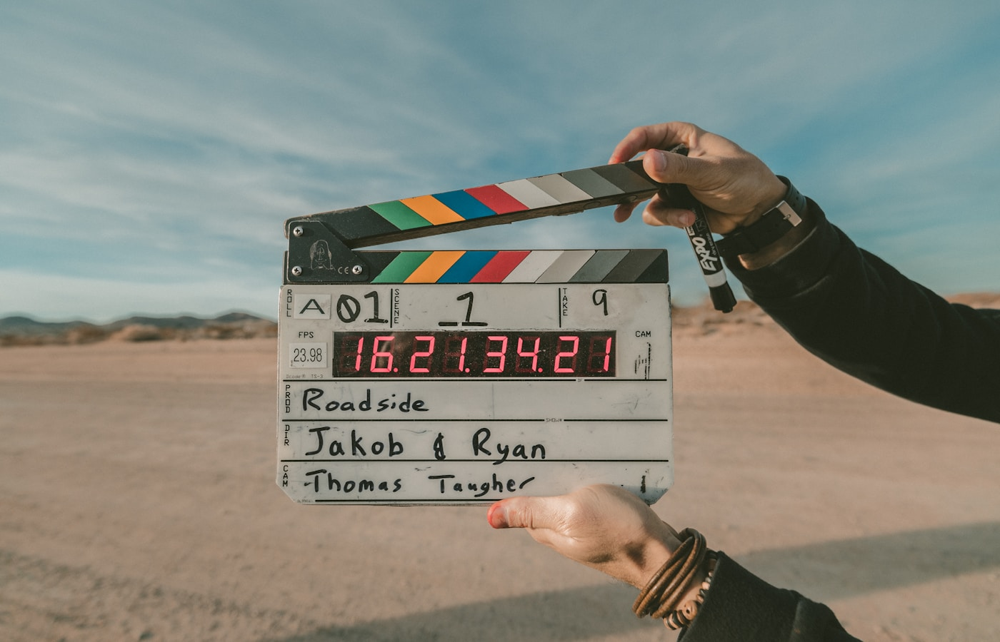
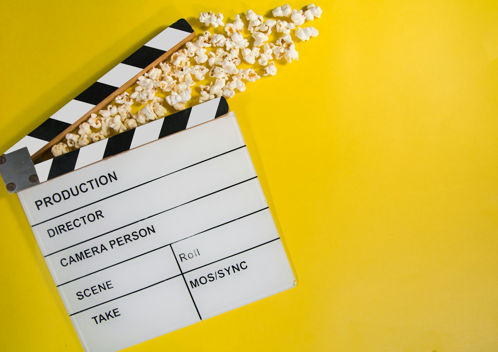

Ad tech-ролик
Гибрид AI и real production для рекламной задачи: концепция, визуальный мир, кадры, motion-ритм и структура короткого ролика.

Первые секунды должны работать как крючок
В рекламном ролике зритель принимает решение почти мгновенно. Поэтому мы начинаем не с описания продукта, а с визуального события: свет, движение, интрига, технологичная среда и быстрый переход к ценности.
Detail shot: технологичная фактура, свет и ощущение механики помогают создать доверие к продукту.

Digital immersion: кадр работает как визуальный мост между продуктом, технологией и рекламным сообщением.
AI-кадры собираются как настоящая съёмка
Чтобы ролик не выглядел случайным набором генераций, заранее фиксируются: камера, свет, цветовая температура, движение, масштаб, плотность кадра и монтажный темп.

Камера и свет задают ощущение real production даже в AI-сценах.
Световая схема помогает удержать общий стиль и сделать кадры визуально совместимыми.
Ролик должен продавать идею, а не демонстрировать технологию
AI в проекте — это инструмент production-скорости и визуальной гибкости. Главная цель остаётся коммерческой: объяснить ценность продукта, усилить бренд и привести зрителя к действию.
Рекламный ролик с production-ощущением
Итог — концепция и визуальная структура ролика, которую можно использовать для презентации клиенту, теста идеи или дальнейшей production-сборки.
Что входит в проект
Концепция, сценарная логика, visual direction, AI-кадры, монтажный ритм, рекомендации по motion и финальному ролику.